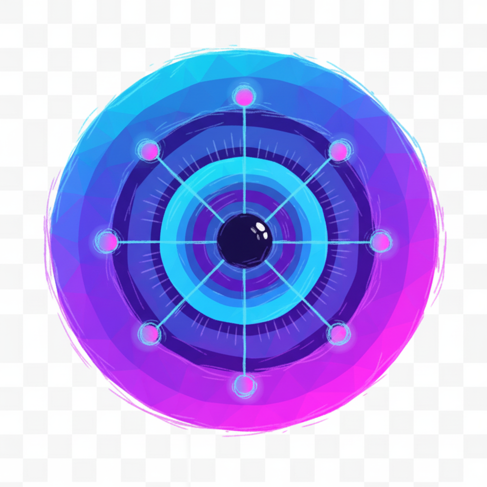

FRIDAI
AGENTIC
DATA OS.
La piattaforma che connette, orchestra e automatizza i dati aziendali — senza migrazione, senza lock-in.
QUATTRO LAYER,
UN UNICO
SISTEMA NERVOSO.
FridAI non è BI, non è un chatbot. È un OS per i dati: si connette a qualsiasi fonte, comprende lo schema semantico e genera automazioni senza spostare un dato.
LLM IN INGRESSO.
RULES AL CENTRO.
OUTPUT DETERMINISTICI.
Tra il linguaggio naturale e gli output finali c'è uno strato deterministico che garantisce accuratezza, ripetibilità e compliance.
QUID: LA PROVA
CHE FRIDAI
FUNZIONA.
Cooperativa Quid (€7.6M ricavi, 147 persone). 6 mesi di co-creazione, risultati misurabili dal giorno uno.
Markup → 0 errori
100% commesse sottocosto identificate e corrette.
Reporting –70%
Lavoro manuale su report operativi drasticamente ridotto.
Pricing +5%
Efficienza pricing con alert predittivi automatici.
Zero Lock-In
Connesso a ERP e CRM legacy senza muovere dati.
AIDRA: FRIDAI
PER IL MONDO
FINANZIARIO.
Stessa architettura agentica, stessi principi — applicati a compliance, risk management, reporting regolamentare e analisi di portafoglio.
TECNOLOGIA
VALIDATA.
SCALABILITÀ DIMOSTRATA.
DA PILOTA A
PIATTAFORMA
DI RIFERIMENTO.
Ideazione & Design
Architettura FridAI, prototipi su dati reali.
Pilota Operativo
Deploy Quid. €147K investiti (€27K CDP). Risultati in 6 mesi.
Brevetto UIBM
IP core protetta. Deposito completato.
AIDRA Finance
Lancio verticalizzazione. Pipeline attiva.
Espansione Verticali
Nuove industrie. Marketplace distrettuale.
I DATI SONO
OVUNQUE. L'INTELLIGENZA
PER USARLI, NO.
FridAI rende ogni azienda capace di decisioni data-driven — senza migrazione, senza lock-in, senza complessità insormontabili.